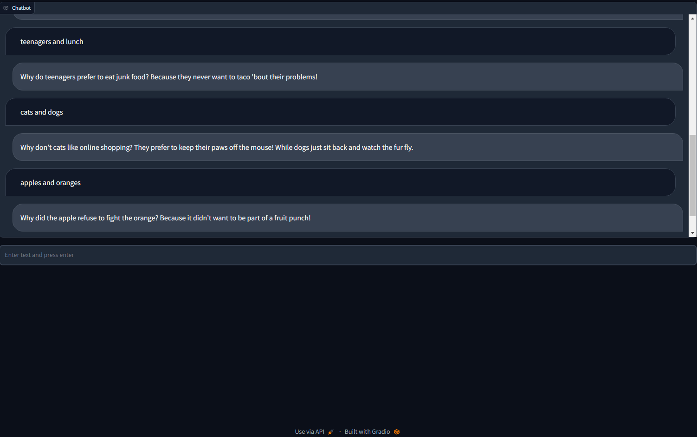
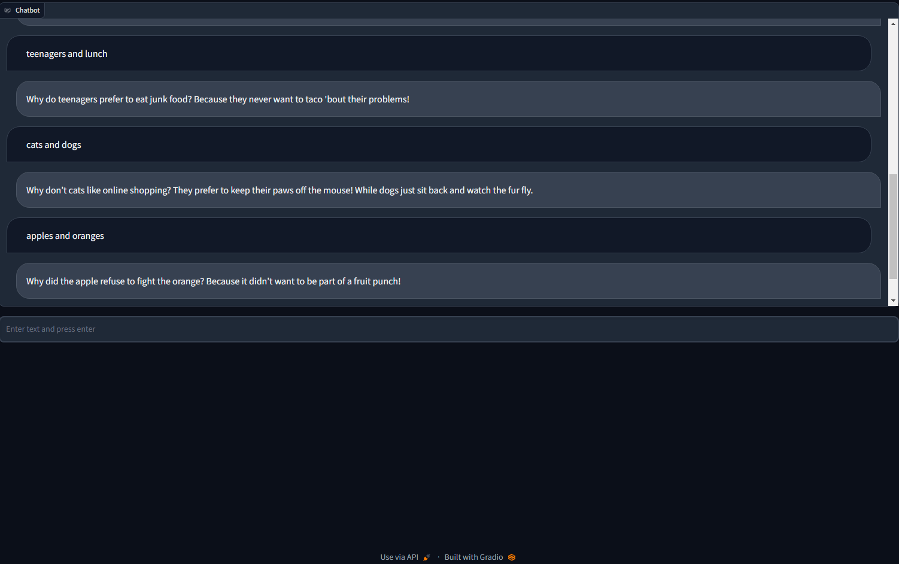
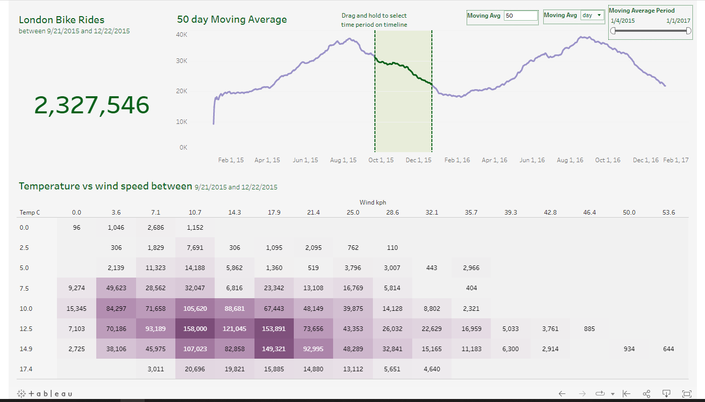
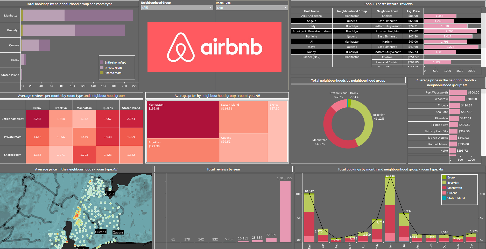
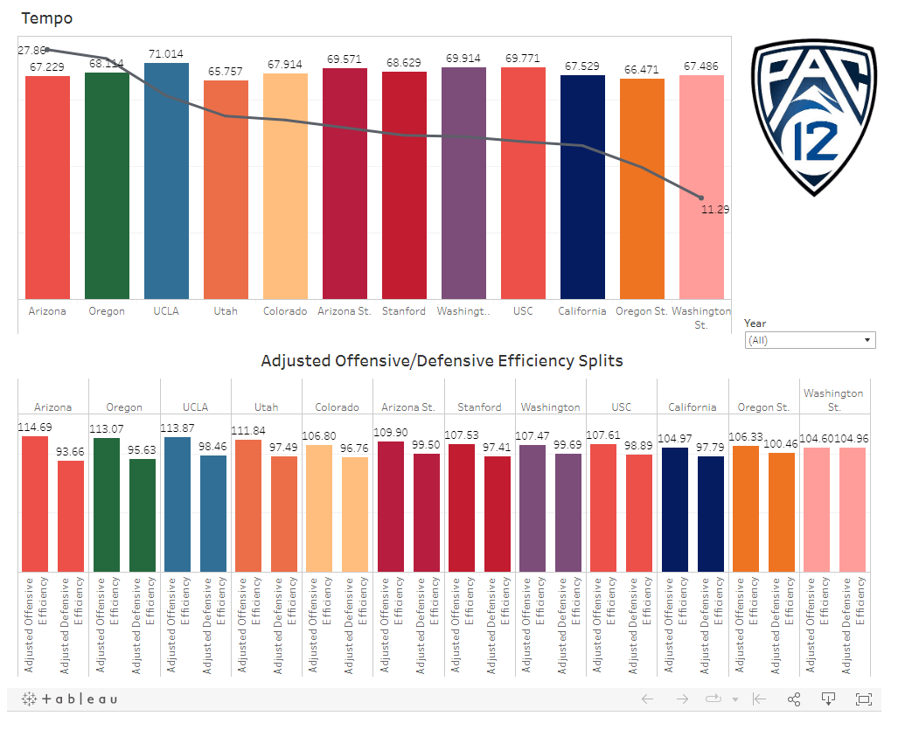
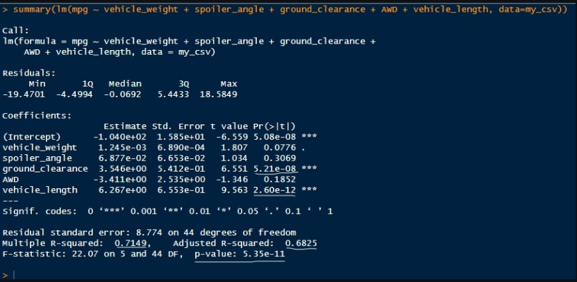

Welcome to my personal profile website! I am a seasoned
professional in the restaurant industry with expertise in data
analytics. My passion for culinary arts and my analytical mindset
led me to pursue a career where I can combine these two fields.
Throughout my career, I have gained extensive experience in menu
development, kitchen operations, and customer service. I have also
honed my skills in data analytics, where I have worked on various
projects that involved analyzing customer data to understand
preferences and develop effective marketing strategies.
As a data analyst, I am skilled in using data visualization tools,
such as Tableau and Excel, to identify trends and patterns that
lead to valuable insights. I have also developed a deep
understanding of statistical analysis, including regression and
clustering, which I use to extract meaningful information from
large datasets.
With my knowledge and experience, I am able to help restaurant
owners and managers make informed decisions that improve their
businesses' performance. Whether it's through developing new menu
items, analyzing customer feedback, or identifying opportunities
to increase revenue, I am dedicated to leveraging data-driven
insights to drive success.
Thank you for taking the time to visit my personal profile
website. Please feel free to browse through my work experience,
skills, and achievements to learn more about what I can bring to
the table. If you have any questions or would like to get in touch
with me, please don't hesitate to reach out.
 

Introducing my latest project, a ChatGPT-based joke chatbot that brings humor and entertainment to users through engaging conversation. This AI-powered bot cleverly generates witty jokes, puns, and humorous anecdotes, showcasing the potential of language models in creating delightful user experiences. Explore the chatbot and discover how AI can transform the way we communicate and share laughter in the digital world.

I recently completed an end-to-end data analysis project, starting with gathering data. I then explored, assessed, and manipulated the data with Python's pandas library, ultimately exporting the final dataset as an Excel file. The project culminated in the creation of five insightful Tableau visualizations, including total bike rides, a moving average chart, a temperature vs. wind speed heatmap, and two visualizations within tooltips showcasing weather and rider count by hour of the day.

I recently designed an eye-catching Airbnb dashboard using Tableau that demonstrates my advanced proficiency with the platform. This visually stunning dashboard not only highlights my ability to create aesthetically pleasing data visualizations but also showcases my talent for revealing meaningful insights. The result is a truly artistic piece that elevates my work in data visualization to a higher level and sets me apart from the average Tableau user.

I developed a comprehensive dashboard examining the Four-Factor Model in the context of the Pac-12 basketball conference. By filtering data from 2013-2019, the interactive dashboard visualizes key metrics, such as Adjusted Offensive and Defensive Efficiency splits, to uncover patterns that contribute to a team's success. This project showcases my ability to analyze complex data, identify relevant trends, and present the results in a clear, engaging manner through a user-friendly dashboard.

In a recent collaborative project, our team utilized data analytics and machine learning to identify high-risk traffic zones in Las Vegas and surrounding Clark County. By analyzing crash data from the Nevada Department of Transportation, we were able to pinpoint patterns and risk factors that contribute to accidents in the area. Our findings resulted in a predictive crash map and an interactive dashboard, which can be used to inform drivers and support targeted road safety measures. This project showcases my ability to work in a team, process complex datasets, and develop practical solutions with real-world applications.

In this project, I demonstrated my proficiency in R by analyzing the performance of AutosRUs' MechaCar prototype against the competition. I performed multiple linear regression analysis, collected summary statistics on suspension coils, ran t-tests, and designed a study to compare MechaCar's performance with other vehicles. This project highlights my ability to apply statistical techniques, draw meaningful insights, and develop data-driven strategies to address real-world challenges in the automotive industry.